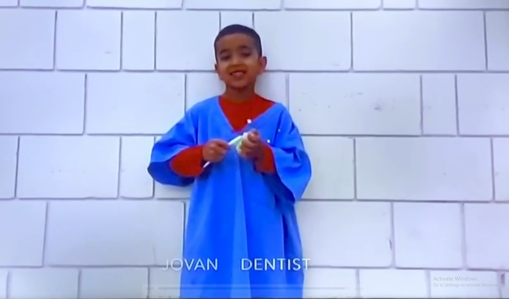

This project is about how oral and maxillofacial surgery could become my main career while business, technology, music, and photography continue to be part of my life.
These interests may look separate, but they all involve learning, creating, solving problems, and improving something over time.
GUIDING QUESTIONHow can I build a future in oral and maxillofacial surgery without giving up the business, technology, and creativity that are already part of who I am?
Jovan PahalCLE 10 Mini-CapstoneOral and Maxillofacial Surgery
PART 1
THE THINGS I ALREADY BUILD
My projects, music, and photography show how I learn, create, and improve ideas.
PROJECT LOG
I learn by building real websites, applications, and experiments. GitHub shows how often I return to making something, even when an idea changes or does not work. Each attempt gives me skills I can carry into the next project.
My projects do not all have to lead to the same result. I build them because technology lets me turn almost any idea into something real.
Playing an instrument is only one part of producing music.
I can learn almost anything on a few instruments, but that is only one part of production. Knowing the melody does not tell me where it belongs, what should surround it, or what the song needs next.
Working with somebody else also means I cannot replace everything they made just because I think another version sounds better. I have to understand what is already working, preserve what matters, and build onto it.
Sometimes I can spend a week developing one idea and a quick cookup still turns out better. Production is teaching me when to keep pushing an idea and when to leave it behind and try another direction.
My progress in music is gradual, but each finished project makes the improvement easier to see.
My uncle is a producer. If I become as good as I want to be, that gives me a real door into that world.
But having the door open does not make up for not being good enough to walk through it.
The beats I have now are not the final result. They are proof that I am improving, even when it takes many attempts before the difference becomes obvious.
You can always delete a bad picture, but you can’t go back and take one you never tried to get.
THE PICTURE INSIDE THE PICTURE
A photo can be hiding inside another photo. In my uncle’s sunglasses, the reflection of me holding the camera became the real subject. The picture was already there. I just had to notice it.
A SKY FULL OF SEPARATE LIVES
From the ground, a plane looks like one object. Inside it are hundreds of people, each on a trip that feels just as important and exciting to them as mine does to me. And that is only one plane.
OLD MEETS NEW
The temple and Skytree share the same frame. Building something new does not mean throwing away everything old. You can keep the lessons that still matter and use them to build something bigger.
BUILD AROUND THE OBSTACLE
Osaka did not wait for the river to disappear before building around it. Some problems are not going away, so the better move is to understand them and work around them.
ROOM INSIDE THE NOISE
In one of the busiest cities in the world, I found a quiet patch of cherry blossoms beside a train station. Even when life feels completely full, there is usually still room for what matters. You just have to find it.
Photography taught me to notice details and opportunities that are easy to miss.
PART 2
WHERE THE CAREER STARTED
My interest in dentistry began early, but my understanding of the career became more detailed over time.

I WANTED TO BECOME A DENTIST BEFORE I UNDERSTOOD WHAT THAT ACTUALLY MEANT.
The original idea was simple. As I learned more about healthcare, technology, business, and the way I like to work, the idea became more specific.
ORAL AND MAXILLOFACIAL SURGERY
The career where the skills I am building now can come together.
It gives me a place to apply precision, technology, responsibility, teamwork, business thinking, and the desire to keep building more.
It lets me take what I am already working on and apply it to one career.
This section explains the education, technology, teamwork, and systems behind the career.
EDUCATION RESEARCH FILE
THE PATHWAY
The route usually takes roughly a decade or more after high school, depending on the program.
HIGH SCHOOL SCIENCE→UNIVERSITY / PRE-DENTISTRY→DMD OR DDS→LICENSING→OMFS SPECIALTY TRAINING→ORAL SURGERY→PRACTICE / OWNERSHIP
UBC — PREFERRED DIRECTION
Closer to home, with family support in Vancouver. It is the route I currently picture most clearly.
UNIVERSITY OF TORONTO
A major dental school and research environment in a city where I also have family support.
UNIVERSITY OF MANITOBA
Another dental-school option with family support in Winnipeg and a different admissions pathway.
STRATEGIC FIRST YEAR
Starting at UNBC or another smaller university could help me begin prerequisite courses, protect my GPA, save money, and build confidence before applying further.
UBC is my preferred direction, but the smartest route is the one that helps me build the strongest grades, experience, and momentum.
I used an intraoral scanner to scan my little brother’s teeth and turn the scan into a digital 3D model.
I did it for fun, but it connected my interest in technology and side projects directly to dentistry.
I want a healthcare path where I can help people and still build something of my own.
A dental practice is not only a place where treatment happens. It is also a team, a system, a patient experience, and a business.
A dental appointment depends on an entire team and system working together.
Front deskSchedulingAssistantsHygienistsEquipmentX-raysPatient flowDecisionsDentist moving between rooms
WATCHING AN IDEA BECOME A REAL BUILDING
I watched my dad’s project from when he acquired the land through planning, blueprints, and the beginning of construction. I built the website and am helping document the process.
It showed me that building something larger is not one decision. It is a long sequence of planning, problem-solving, patience, and continuing to add onto what already exists.
I like to keep building onto what I create.
The same thinking could eventually apply to dentistry: improving one practice, strengthening its systems, adding rooms or people, and eventually expanding into something larger.
PART 4
BUILDING MORE THAN ONE THING
Dentistry could also connect to ownership, technology, business, and larger projects.
AI does not replace my thinking.
It helps me research, organize, test, and build faster.
I still choose the idea and make the important decisions.
Knowing people can create opportunities,
but skill is what allows me to use them.
My uncle being a producer gives me one possible door. Growing up around dentistry gives me another. Neither opportunity matters unless I develop the ability to actually use it.
Oral surgery can be my main career while I continue music, photography, technology, and business.
I can keep building, producing, taking photographs, and experimenting with technology while working toward one serious career.
PART 5
HOW IT ALL FITS TOGETHER
Oral surgery can become my main direction without replacing the other parts of who I am.
WHAT SURPRISED ME
I used to think dentistry was mainly the treatment itself. Now I understand how much technology, teamwork, organization, patient experience, and business exist behind every appointment.
WHAT I LEARNED ABOUT MYSELF
I do not need one interest to replace all the others. I need one strong direction that gives the rest of my interests room to keep growing.
MY NEXT STEP
Arrange an informational interview or shadowing experience with an oral and maxillofacial surgeon.
Seeing the real daily work would help me compare the career with the future I currently imagine and make smarter decisions about courses, universities, and experience.
ONGOING ACTIONS
Strengthen science and grades.
Research current dental-school requirements.
Continue technology and business projects.
Keep producing music and taking photographs.
Continue work experience and responsibility.
Long term: complete OMFS training and build a strong practice.
CLE 10 assignment
UBC Faculty of Dentistry
University of Toronto Faculty of Dentistry
University of Manitoba College of Dentistry
Canadian Association of Oral and Maxillofacial Surgeons
Canadian Dental Association
National Dental Examining Board of Canada
Personal experience and media
I can build a serious healthcare career without giving up the other interests that make me who I am.
Website built by Jovan Pahal
CLE 10 MINI-CAPSTONE / READER MODE
THE FUTURE I’M BUILDING
Jovan Pahal · Oral and Maxillofacial Surgery
PART 1
THE THINGS I ALREADY BUILD
My projects, music, and photography show how I learn, create, and improve ideas.
PROJECTS
I learn by building real websites, applications, and experiments. Even when an idea changes or ends, I keep the problem-solving, organization, and technical skills that came from making it.
MUSIC
Playing an instrument is only one part of producing. Production also requires arrangement, judgment, collaboration, and enough patience to finish work and hear the improvement over time.
PHOTOGRAPHY
Photography taught me to notice details and opportunities that are easy to miss. “You can always delete a bad picture, but you can’t go back and take one you never tried to get.”
PART 2
WHERE THE CAREER STARTED
My interest in dentistry began early, but my understanding of the career became more detailed over time.
THE EARLY IDEA
In kindergarten, I said I wanted to become a dentist before I understood the education, specialties, technology, or business behind the career. The idea stayed, but the plan became more specific.
WHY ORAL SURGERY
Oral and maxillofacial surgery connects healthcare, precision, responsibility, technology, teamwork, and long-term training. It can also connect to practice ownership and the systems required to build something larger.
WHY IT FITS
These interests show how I think. Dentistry is where I can see them becoming part of one serious career.
PART 3 / RESEARCH VERIFIED JUNE 2026
TURNING THE IDEA INTO A REAL PLAN
The entire route usually requires roughly a decade or more of education and specialty training after high school, depending on the program.
HIGH SCHOOLBuild strong grades and preparation through chemistry, biology, mathematics, English, and good study habits.
UNIVERSITYComplete the university science and other prerequisite courses required for dental-school applications, prepare for the DAT, and build a competitive GPA.
DENTAL SCHOOLComplete a four-year DMD or DDS professional dental degree.
LICENSINGComplete the national dental certification process and meet the requirements of the provincial regulator.
SPECIALTY TRAININGComplete several additional years of oral and maxillofacial surgery residency and specialty training. CAOMS currently lists four- and six-year Canadian programs.
DIRECTIONWork toward oral surgery, then decide how practice, ownership, technology, and expansion fit into the career.
UBC — PREFERRED DIRECTION
Closer to home, with family support in Vancouver. UBC currently requires university credits and prerequisite courses, plus the DAT; meeting minimums does not guarantee admission.
UNIVERSITY OF TORONTO
A major dental school and research environment in a city where I also have family support. Its DDS is four years after university preparation and currently requires prerequisites, the DAT, and Casper.
UNIVERSITY OF MANITOBA
Another dental-school option with family support in Winnipeg. Its four-year DMD is an advanced-entry program with required pre-dentistry study and its own admissions pathway.
STRATEGIC FIRST YEAR
Starting at UNBC or another smaller university could help me begin prerequisite courses, protect my GPA, save money, and build confidence before applying further. It is not a guaranteed transfer route.
UBC is my preferred direction, but the smartest route is the one that helps me build the strongest grades, experience, and momentum.
PART 4
BUILDING MORE THAN ONE THING
Dentistry could also connect to ownership, technology, business, and larger projects.
TECHNOLOGY
I used an intraoral scanner to scan my little brother’s teeth and turn the scan into a digital 3D model. It made the connection between dentistry and technology concrete.
TEAM AND SYSTEM
A dental appointment depends on an entire team and system working together: scheduling, assistants, hygienists, equipment, patient flow, decisions, and treatment.
OWNERSHIP AND TOOLS
Watching a building project showed me how larger work grows through planning and steady decisions. AI can help me research, organize, test, and build, but I still choose the direction. Knowing people can create opportunities, but skill is what allows me to use them.
PART 5
HOW IT ALL FITS TOGETHER
Oral surgery can become my main direction without replacing the other parts of who I am.
WHAT SURPRISED ME
I used to think dentistry was mainly the treatment itself. Now I understand how much technology, teamwork, organization, patient experience, and business exist behind every appointment.
WHAT I LEARNED ABOUT MYSELF
I do not need one interest to replace all the others. I need one strong direction that gives the rest of my interests room to keep growing.
MY NEXT STEP
Arrange an informational interview or shadowing experience with an oral and maxillofacial surgeon. Seeing the real daily work would help me make smarter decisions about courses, universities, and experience.